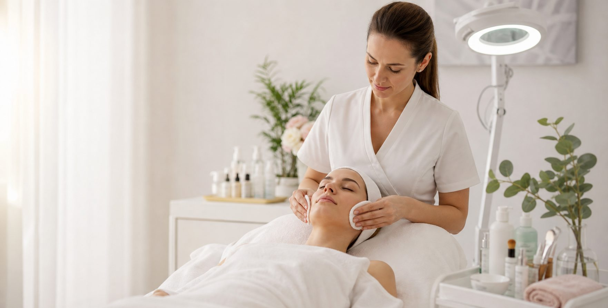
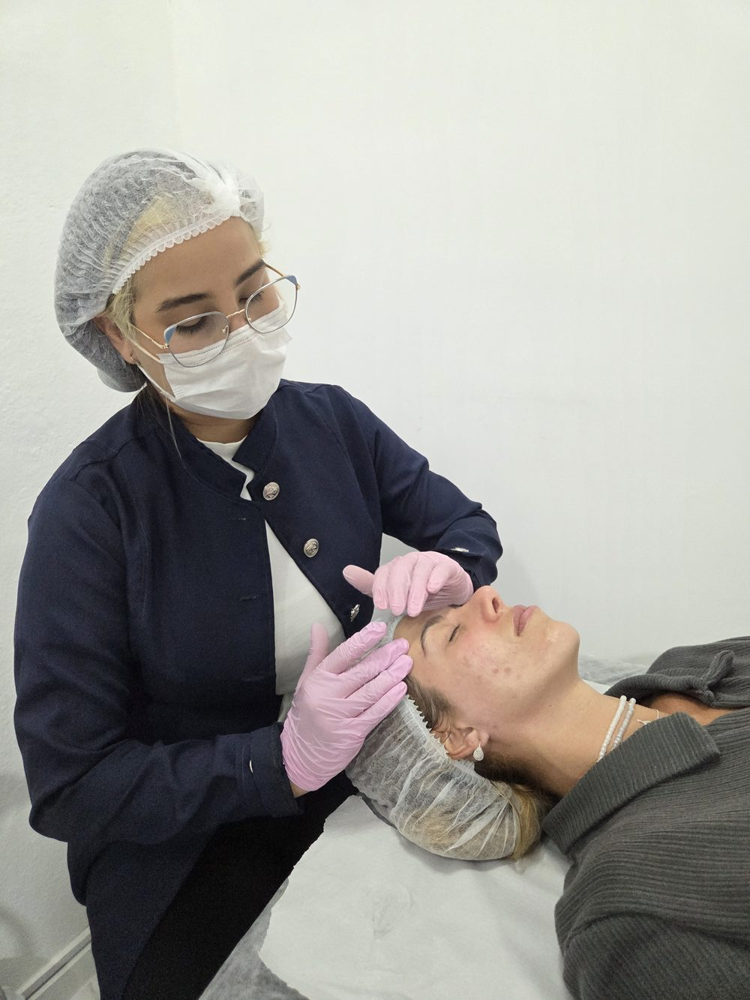

Limpeza de pele profunda
Higienização, extração criteriosa e finalização calmante.

Laura Anjos · Biomédica
Limpeza de pele, avaliação facial e peelings para textura, luminosidade e equilíbrio da pele.
Atendimento exclusivo em Angra dos Reis - RJ
Tratamentos
Protocolos definidos após avaliação, com foco na necessidade real da pele e na rotina de cada paciente.
Higienização, extração criteriosa e finalização calmante.
Renovação superficial indicada após avaliação da pele.
Cuidado estético para acne, poros e excesso de brilho.
Protocolos para uniformidade visual e toque mais refinado.
Cuidado para viço, maciez e luminosidade.
Rotina simples para manter os cuidados em casa.
Método
Avaliação, protocolo e orientação para a paciente entender a própria pele e cuidar dela fora da clínica.

Sobre a profissional
Laura Anjos é biomédica e conduz cada atendimento com avaliação facial, escuta e protocolos personalizados para a rotina da paciente.
Depoimentos
Comentários reais de clientes no Instagram.
"Literalmente a melhor limpeza de pele que eu já fiz! Tenho a pele sensível e mesmo assim meu rosto fica lisinho e sem vermelhidão."
@sohoffmann_ Comentário no Instagram"Show, eu super indico!"
@quintinosilas Comentário no Instagram"Na espera pra cuidar de nós... você é a melhor!"
@jo958447 Comentário no Instagram"Excelente profissional!!!"
@renataanjos_07 Comentário no Instagram"Demais"
@sohoffmann_ Comentário no Instagram"A melhor do mundo"
@hoffmanncore Comentário no InstagramLocalização
Atendimento presencial em dois espaços parceiros em Angra dos Reis - RJ, sempre com horário marcado.
Chamar no WhatsAppDúvidas frequentes
O primeiro passo é a avaliação facial. Depois dela, Laura indica o protocolo mais adequado.
Pode haver leve desconforto na extração, sempre respeitando a sensibilidade da pele.
Varia conforme o protocolo indicado na avaliação. Laura informa o tempo estimado antes de iniciar a sessão.
Agendamento
Envie uma mensagem para marcar uma avaliação em Angra dos Reis.
Procedimentos indicados após avaliação. Resultados variam conforme cada pele.